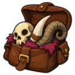
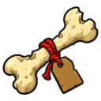

A Grim Collection
The bone was only the beginning. Tomas won't say why he needs the rest - only that "the Master wants proof from every corner." He hands you a tattered list of oddities.
| Property | Value |
|---|---|
| Quest giver | |
| Zone | 🌾 Ashvale |
| Quest points | 3 |
| Requirements |  A Curious Find |
Objectives
- Hand in
 Rotted Fang ×3
Rotted Fang ×3 - Hand in
 Warped Sigil ×3
Warped Sigil ×3 - Hand in
 Grave-Ash Vial ×3
Grave-Ash Vial ×3
Rewards
- 🪙 10,000 coins
- 5,000 💀 Slayer XP